Mutations
A mutation is a change in the sequence of bases in a gene (or a change to a chromosome).
- It often changes the sequence of amino acids in the protein.
- Generally this means the protein no longer works normally: it is "broken".
- The broken protein leads to a change in a characteristic or trait.
Mutations can happen at the gene level (changing the nucleotides) or the chromosomal level (adding or deleting whole chromosomes or parts of chromosomes). Even one base change can cause a genetic disorder.
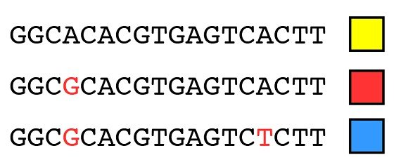
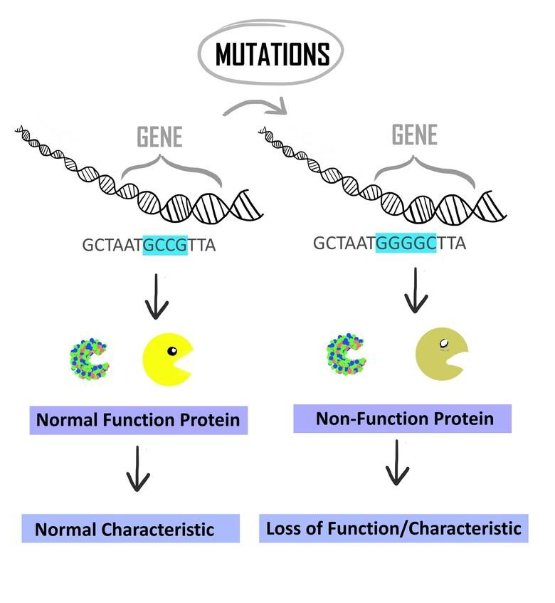
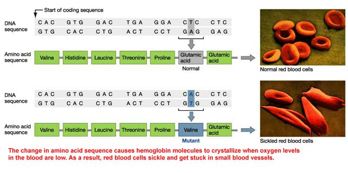
Why do mutations occur?
- Mistakes can happen as DNA is copied (replicated).
- If the mutation is in eggs or sperm, it can be passed on to the next generation.
- Mutations in body (somatic) cells can't be passed to offspring, but can cause disease, e.g. cancer.
- Mutations may happen spontaneously (by chance) or because of damage to DNA from UV radiation, nuclear radiation and certain chemicals such as nicotine and asbestos. Chemicals that cause cancer are called carcinogens.
Mitosis
New cells are made by cell division. In mitosis, a parent cell grows and divides into two identical daughter cells. Every cell in your body, except your sex cells, was made by mitosis. The DNA must first be duplicated (DNA replication) so each daughter cell gets a full copy.
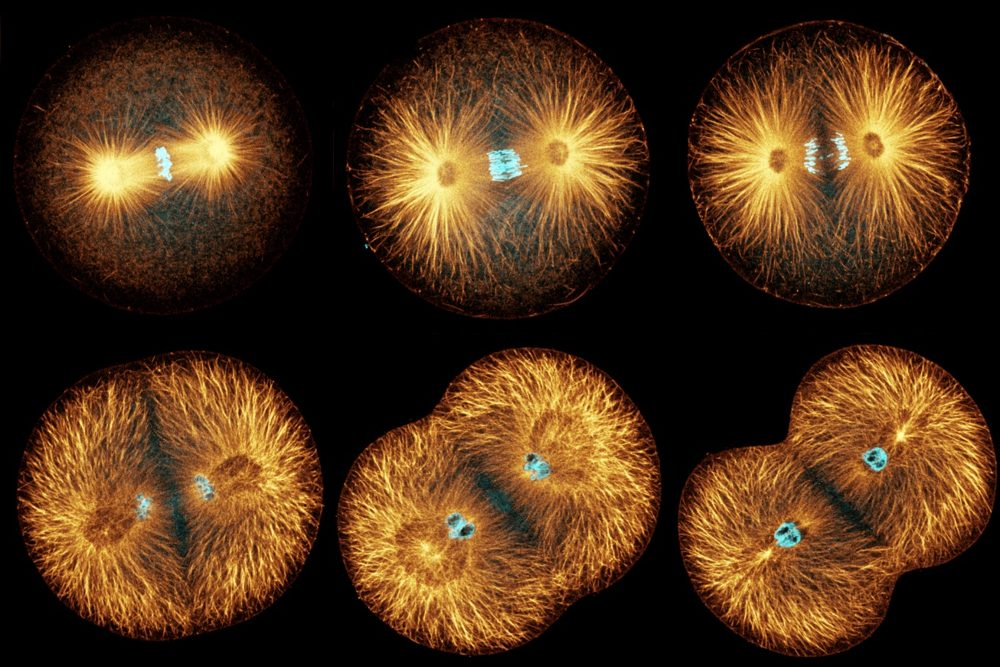
- Interphase: the DNA replicates. Each chromosome becomes two identical sister chromatids joined at the centromere. (In humans we still say there are 46 chromosomes, but now there are 92 chromatids.) Chromosomes aren't visible, and centrioles begin to form.
- Prophase: chromosomes condense and become visible. Centrioles move to opposite sides of the cell, and spindle fibres form between them.
- Metaphase: the nuclear membrane breaks down. Spindle fibres attach to the centromeres, and the chromosomes line up along the middle of the cell in single file. (M for middle.)
- Anaphase: spindle fibres contract, and the sister chromatids are pulled apart to opposite ends of the cell. (A for away.)
- Telophase and cytokinesis: nuclear membranes re-form around each set of chromosomes, spindle fibres break down, and the cell membrane pinches in to make two cells.
Result: two daughter cells identical to the parent cell.
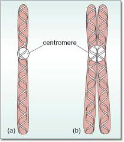
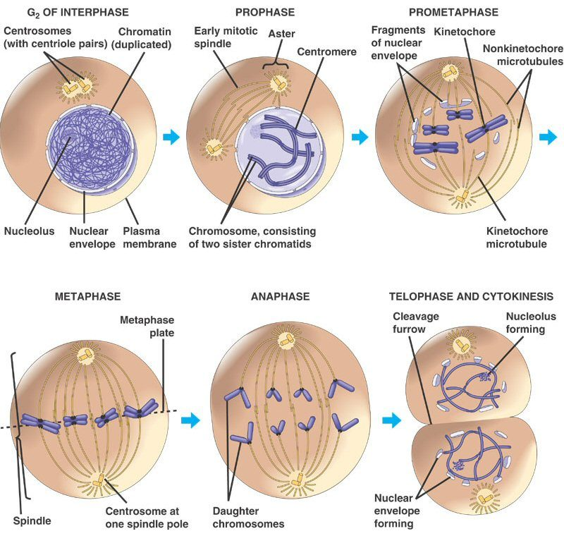
List the 5 stages of mitosis in order.
- 2. 3. 4. 5.
Cancer
Normal cells grow and divide in a controlled way. When the genes that speed up or slow down cell division are mutated, cells can grow out of control, forming a tumour: cancer.
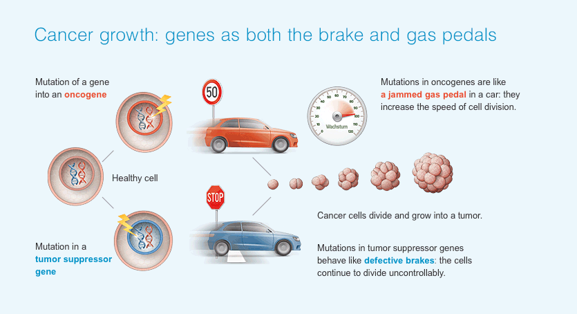
Meiosis
Gametes (sex cells: sperm and eggs) have half the number of chromosomes of other cells: 23 in humans.
- Cells with one copy of each chromosome are haploid (n). The haploid number for humans is 23.
- Most body (somatic) cells have two copies of each chromosome: they are diploid (2n). The diploid number for humans is 46.
- At fertilisation, a haploid sperm (23) joins a haploid egg (23) to form a diploid zygote (46).
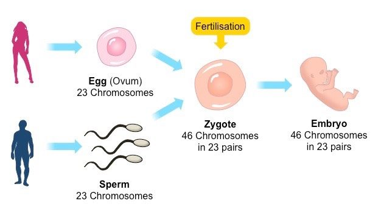
Meiosis is the cell division that produces gametes. In humans it happens in the ovaries (making eggs) and the testes (making sperm). It has two divisions, meiosis I and meiosis II.
- Meiosis I: similar to mitosis, but in metaphase I the chromosomes line up in homologous pairs (two lines instead of one). In anaphase I, the homologous chromosomes separate to opposite sides. Telophase I gives 2 cells, each with 23 chromosomes in humans.
- Meiosis II: almost identical to mitosis, in both cells. The sister chromatids separate, giving four cells.
Result: four unique daughter cells, each with half the number of chromosomes of the parent cell.
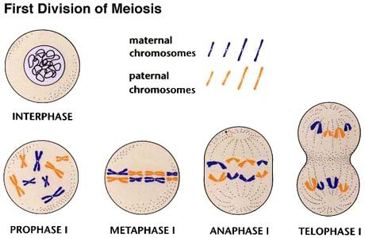
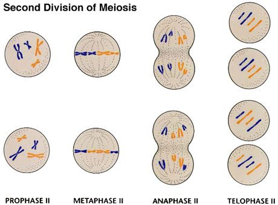
Diversity from meiosis
The daughter cells of meiosis are very different from the parent cell, and from each other. Two key processes create this genetic variation:
- Crossing over: in prophase I, the chromosomes of each homologous pair line up and swap some alleles, forming recombinant chromosomes.
- Independent assortment: only one chromosome from each homologous pair goes into each daughter cell, and which one is random.
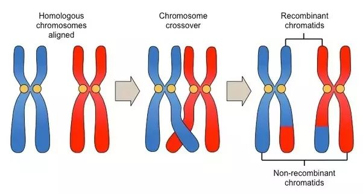
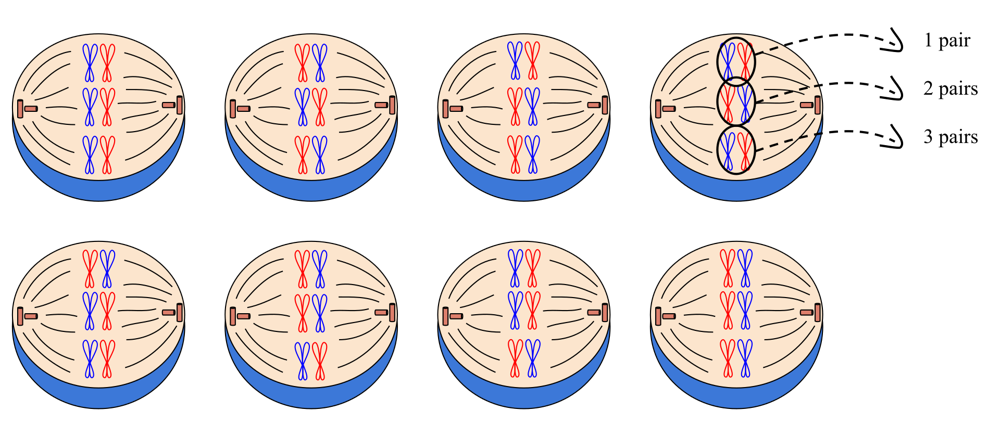
To produce gametes (sex cells) with half the number of chromosomes (haploid), so that when a sperm and egg join at fertilisation the zygote has the normal diploid number (46 in humans). It also creates genetic variation through crossing over and independent assortment.
It means offspring are genetically different from each other and from their parents. Variation in a population increases the chance that some individuals will have traits that help them survive if the environment changes (for example, a new disease), which is the basis of natural selection.